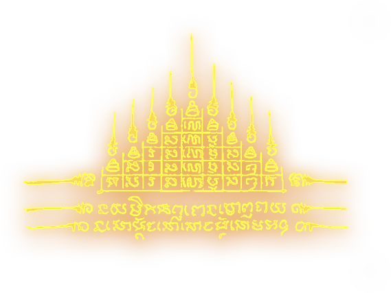

Sak Yant: The Spiritual
Tattoos of Muay Thai
Thailand, deeply rooted in Buddhist traditions, views "Sak Yant" (Yantra Tattooing) not merely as body
art, but as a sacred ritual intertwining religion, magic, and culture. Muay Thai fighters and martial artists
worldwide seek these tattoos to invoke blessings of power, protection, and fortune,
as well as to symbolize respect for their teachers and the art itself.
The term "Sak Yant" translates to "Magic Tattoo" or "Sacred Yantra." Authentically, these designs must
be bestowed by Buddhist monks or spiritual masters (Arjarn) who have undergone rigorous training in the magical arts.
